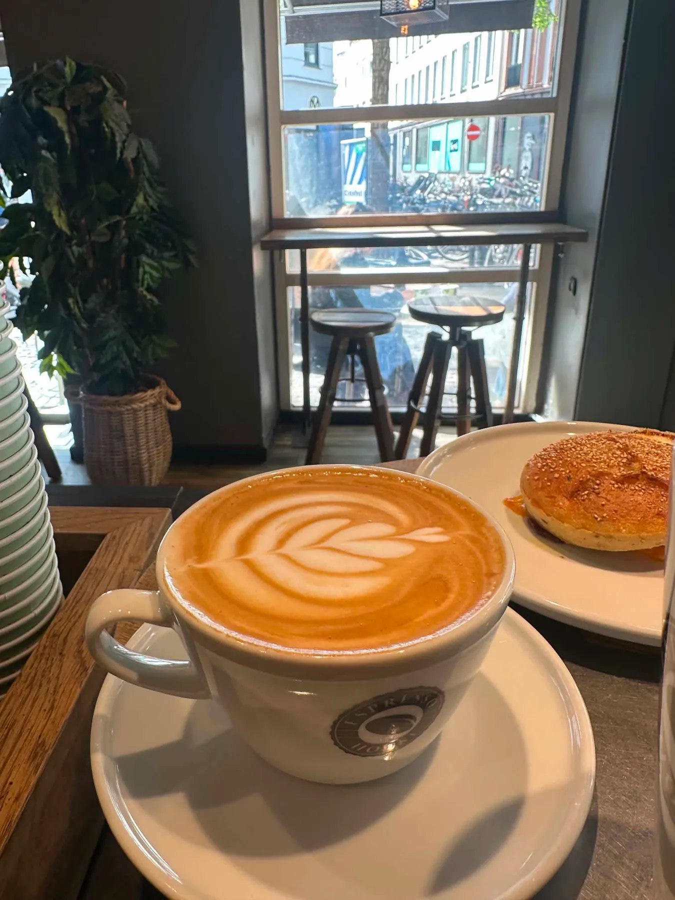
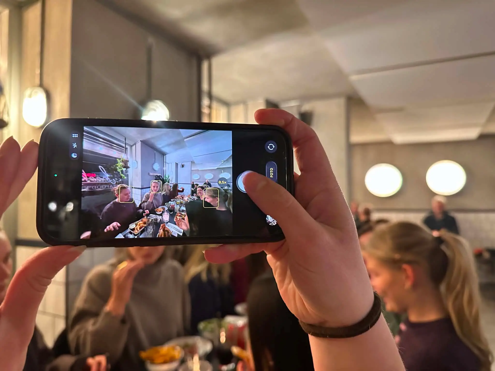
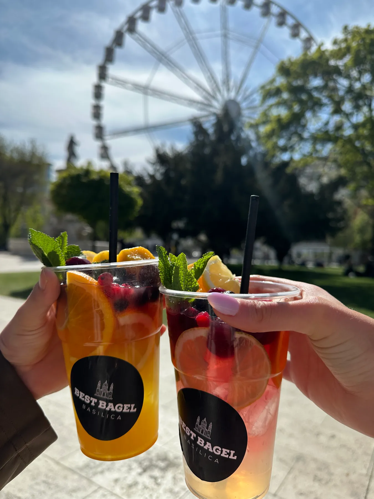
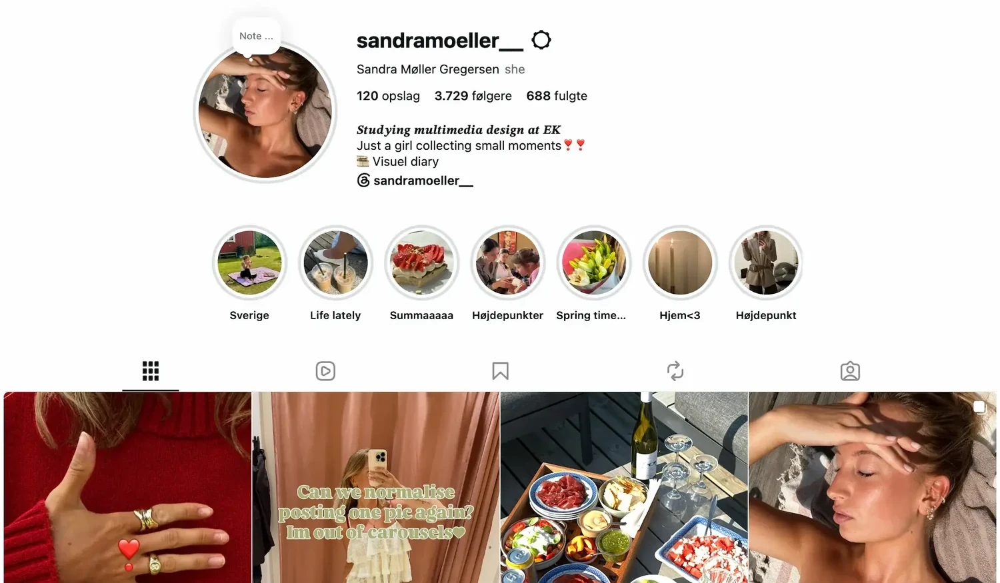
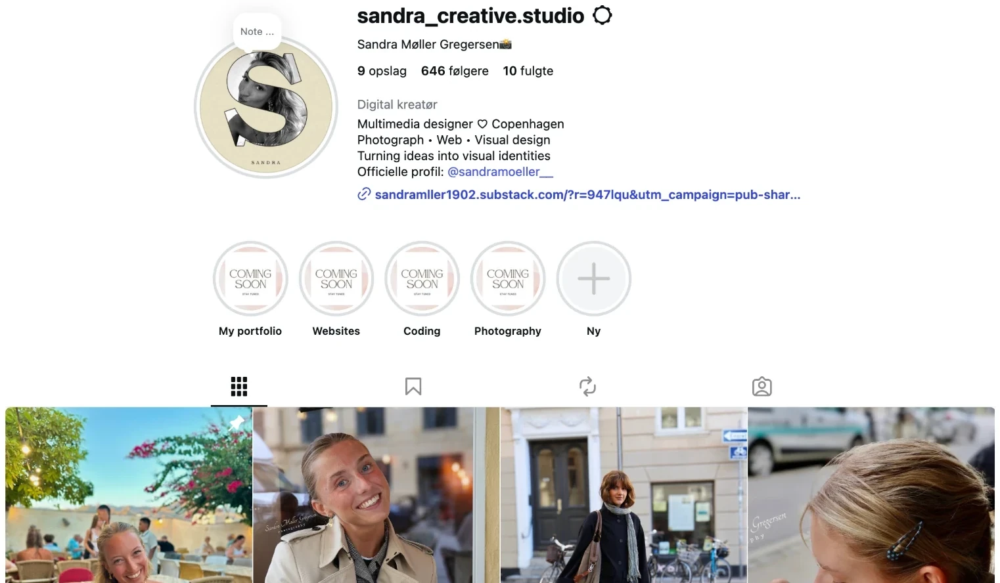
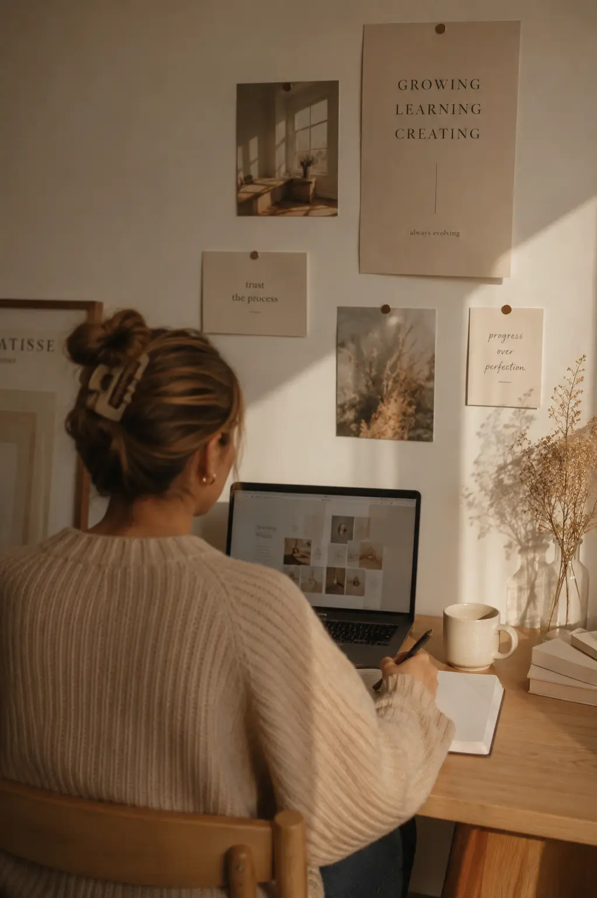
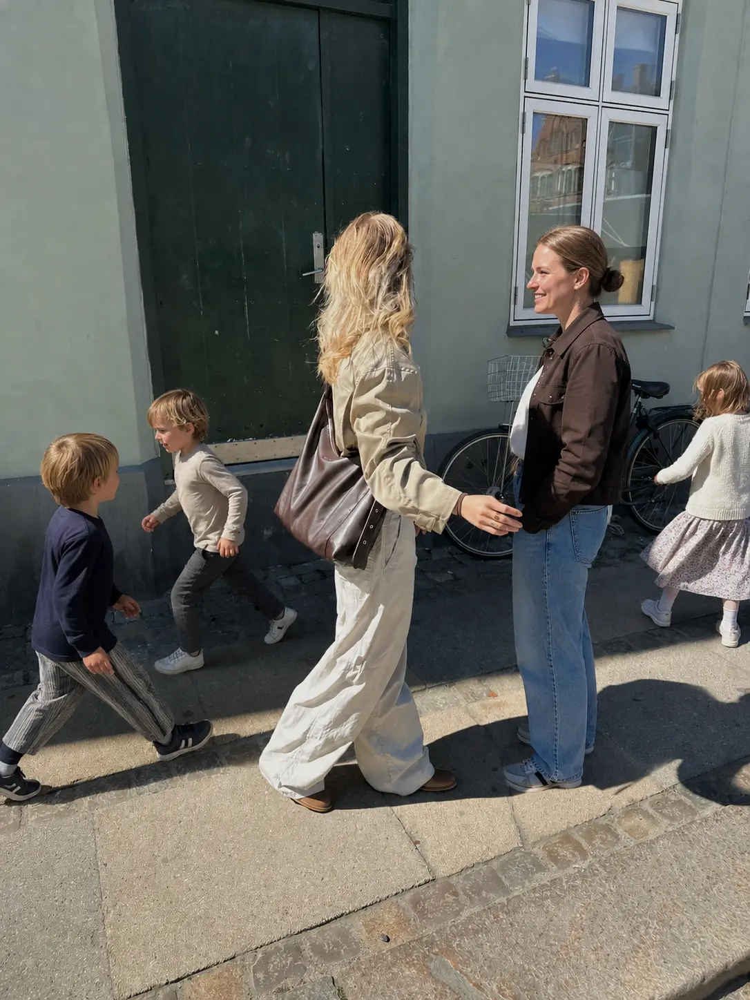

Fra barista til
Assistant Manager
Espresso House
Min tid hos Espresso House har givet mig mere end erfaring med kaffe. Gennem flere år har jeg
udviklet mig fra barista
til Assistant Manager, hvor jeg har fået et større ansvar for den daglige drift, samarbejdet i
teamet og planlægningen
af arbejdsdagen.
Rollen har lært mig at bevare overblikket i et travlt miljø, træffe
beslutninger under pres og sikre,
at både kolleger og gæster får den bedst mulige oplevelse. Det har styrket mine lederevner og
givet mig en forståelse
for, hvor vigtigt godt samarbejde og tydelig kommunikation er.

Ansvar med plads
Til kreativiteten
Ud over mine daglige arbejdsopgaver fik jeg mulighed for at være medansvarlig for Espresso Houses
sociale medier,
hvilket gav mig værdifuld praktisk erfaring med digital kommunikation og content creation.
Her
arbejdede jeg med at
planlægge, udvikle og producere indhold, der afspejlede caféens visuelle identitet og skabte
engagement hos gæsterne.
Jeg var med til at tænke kreativt omkring kampagner, tage billeder, udarbejde opslag og sikre, at
indholdet passede til
målgruppen og virksomhedens brand.
Arbejdet gav mig et indblik i, hvor stor betydning visuel kommunikation har for en virksomheds
identitet. Jeg lærte,
hvordan farver, komposition, billedvalg og tone of voice er med til at skabe en genkendelig
oplevelse og styrke
relationen til kunderne. Samtidig oplevede jeg, hvor vigtigt det er at skabe indhold, der både
fanger opmærksomheden og
understøtter virksomhedens budskab.
Denne erfaring har styrket min interesse for branding,
visuel identitet og digital markedsføring. Den har også givet mig
en større forståelse for, hvordan kreativitet kan omsættes til strategisk kommunikation, og hvordan
design kan være med
til at skabe værdi – både visuelt og forretningmæssigt.

Mit kreative
univers
Ved siden af mit studie og arbejde driver jeg min egen Instagram-profil, hvor jeg deler mit kreative univers og arbejder med visuelt indhold.
Profilen giver mig mulighed for løbende at udforske nye idéer, eksperimentere med æstetik og udvikle
mine kompetencer
inden for content creation, visuel identitet og digital kommunikation. Jeg arbejder bevidst med at
skabe et
sammenhængende visuelt udtryk, hvor både billeder, farver og komposition understøtter den
fortælling, jeg ønsker at
formidle.
Gennem arbejdet med min profil har jeg opnået en større forståelse for, hvordan målrettet
indhold
kan skabe engagement
og styrke en visuel identitet. Det har samtidig givet mig praktisk erfaring med at planlægge
indhold, følge kreative
idéer til dørs og udvikle et personligt udtryk – kompetencer, som jeg tager med mig i mit arbejde
som kommende
multimediedesigner.



Kontakt mig her


Klar til næste kapitel
Mine erfaringer fra både servicebranchen, institutionsverdenen (børnehave/vuggestue) og den kreative branche har givet mig et stærkt fundament, som jeg tager med videre i min karriere.
Mit arbejde har lært mig ansvar, struktur og samarbejde, og at forstå forskellige mennesker og deres behov. Nu glæder jeg mig til at bruge det som multimediedesigner, hvor jeg kan kombinere kreativitet med brugeren i fokus.
Gennem mit arbejde har jeg lært værdien af ansvar, struktur og samarbejde, samtidig med at jeg har udviklet mine kreative kompetencer gennem studiet og egne projekter. Mit arbejde i en institution har desuden styrket min evne til at aflæse mennesker, forstå forskellige behov og tilpasse min kommunikation til både børn, forældre og kolleger. Det har lært mig at møde forskellige situationer med empati, fleksibilitet og professionalisme – kompetencer, som jeg også ser som en stor styrke i samarbejdet med kunder og brugere.
I dag ser jeg frem til at omsætte mine erfaringer i en professionel rolle som multimediedesigner,
hvor jeg kan kombinere
kreativitet med en brugerorienteret tilgang.
Jeg ønsker at bidrage med engagement,
nysgerrighed og
en vilje til konstant
at udvikle mig,
samtidig med at jeg skaber løsninger, der både er gennemtænkte, funktionelle og
skaber værdi.